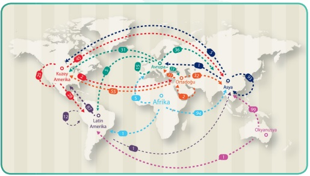

Sağlık Turizmi Turistleri Sınıflandırılması
Bu konuda uluslararası standartlar, sağlık turizmi kapsamında seyahat eden hastaları aşağıdaki sınıflara ayırmaktadır:
- Daimi olarak yaşadığı bir yerden, bir başka bölgeye yalnızca sağlık hizmeti almak için seyahate çıkan kişiler. Bu kişiler ‘’ Medikal Turist ‘’olarak tanımlanır.
- Tatil amacı ile bulundukları ülkede aniden gelişen beklenmeyen koşullar nedeni ile acilen ya da plansız olarak sağlık hizmeti alması gereken turistler ‘’ Turistik Sağlık Kapsamında Hizmet Alan Hasta ‘’ olarak tanımlanır.
- Sağlık Bakanlığı ve diğer ülkeler ile sağlık alanında sağlık turizmi ile ilgili olarak yapılmış ikili anlaşmalar dahilinde Türkiye’ye giriş yapan turistlere’’ Sağlık Alanında İkili Anlaşmalı Ülkelerden Gelen Hasta ‘’ tanımı yapılmaktadır.
- Ülkeler arası Sosyal Güvenlik kuruluşları arasında yapılan anlaşmalar dahilinde, farklı ülkelerdeki sağlık hizmetlerinden yararlanmak için Türkiye’ye gelen turistlere ise ‘’ Sosyal Güvenlik Kurumu Anlaşmalı Ülkelerden Gelen Hasta’’ tanımı altında hizmet verilmektedir.
